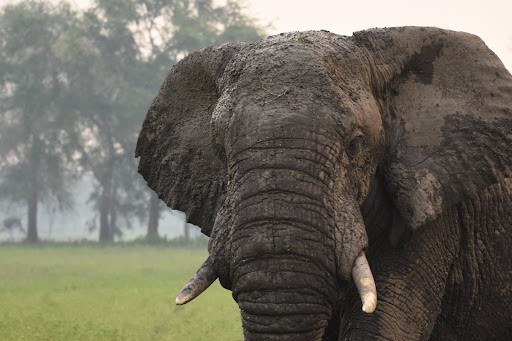

Rewards for Wildlife Whistleblowing
Wildlife trafficking has increased sharply in recent decades, in part due to corruption, low risk of detection, consumer demand, and high financial rewards. With the trade estimated to be worth up to $23 billion, a key challenge is to incentivize those with insider knowledge to report trafficking and provide evidence to support the prosecution of wildlife crimes.
Recognizing the role that technology can play in curbing the illegal wildlife trade, in 2014, USAID launched the Wildlife Crime Tech Challenge to offer rewards to science and technology innovators tackling wildlife trafficking issues. Initiated in partnership with the National Geographic Society, the Smithsonian Institution, and the non-governmental organization TRAFFIC, the challenge focused on four priority areas: detecting transit routes, strengthening forensic evidence and data sharing, reducing consumer demand, and tackling corruption.

The National Whistleblower Center, a non-profit devoted to protecting and rewarding whistleblowers around the world, was one of four grand prize winners eligible to receive up to $500,000 from the challenge. The center was awarded for its Global Wildlife Whistleblower Program, which used the funding to expand and scale a secure, online platform to facilitate confidential and anonymous reporting of illegal wildlife trade evidence. The program also expanded to connect whistleblowers with attorneys who can help maintain their confidentiality, prepare information for authorities, and assess eligibility and apply for monetary rewards under U.S. wildlife protection laws.
By supporting whistleblowers, the program has helped chip away at one of the underlying drivers of biodiversity loss: the corruption which enables the illegal wildlife trade to thrive and ultimately undermines global development, healthy environments, and access to safe and legal livelihoods.
Whistleblowers: An Underutilized Tool for Fighting Wildlife Crime?
According to Stephen Kohn, the founder of the National Whistleblower Center, whistleblowing is the number one method of uncovering fraud and corruption. With wildlife trafficking closely tied to corruption, whistleblowing is an important, yet underutilized, tool for tackling it.
Through its Global Wildlife Whistleblower Program, the National Whistleblower Center aimed to both increase awareness of U.S. wildlife protection laws globally, and provide a platform for people to file cases and apply those laws, many of which include monetary compensation for whistleblowers.
“The key to policing worldwide wildlife trafficking of plants, fish, and animals is the creation of an effective whistleblower regime for detection,” said Kohn. “Without the ability to detect the crime, you can’t police it or enforce it.”
Five Years On: Lessons from the Global Wildlife Whistleblower Program
With funding from the challenge, the center was able to implement the secure, transnational, and digital intake system and refer cases to interested attorneys for further litigation. To date, the intake process has referred at least 12 cases for legal action (up from zero wildlife cases when it first started) to other law firms, which are still in process.

The program also complements USAID’s work in broader anti-corruption efforts: By increasing evidence-sharing and rewarding reporting of illicit activities, it helps facilitate transparency, accountability, and access to information around financial flows, all of which are key to countering corruption.
While USAID’s support provided the seed funding needed to pursue initial cases, litigating wildlife crime is expensive. Raising awareness among the legal community of the financial rewards available for wildlife cases and creating a market for these cases has been “unquestionably, the major benefit [of the program],” said Kohn.
Whistleblowing Benefits to Conservation and Beyond
The National Whistleblower Center’s work to raise awareness of whistleblowing for wildlife crimes has had ripple effects across sectors.

International recognition of the role of whistleblowers in combating wildlife crime and corruption has resulted in the adoption of a number of resolutions by multilateral international bodies, including the UN Convention against Corruption, the Convention on International Trade in Endangered Species of Wild Fauna and Flora (CITES), and the International Union for Conservation of Nature (IUCN), the latter of which the center says will “accelerate momentum for wildlife whistleblower protections worldwide.”
The whistleblower program has also helped generate interest in wildlife crime from the legal community, allowing the center to build a network of law firms interested in prosecuting wildlife crime and strengthen its reputation as a watchdog organization.
With the shifts around wildlife whistleblowing, the impact of USAID’s Wildlife Crime Tech Challenge, and its support for the Global Wildlife Whistleblower program, will play a crucial role in promoting good governance — and, in turn, development and the conservation of natural resources and biodiversity.
Check out this interactive map to learn more about the other winners of the Wildlife Crime Tech Challenge and USAID’s work to combat wildlife trafficking.